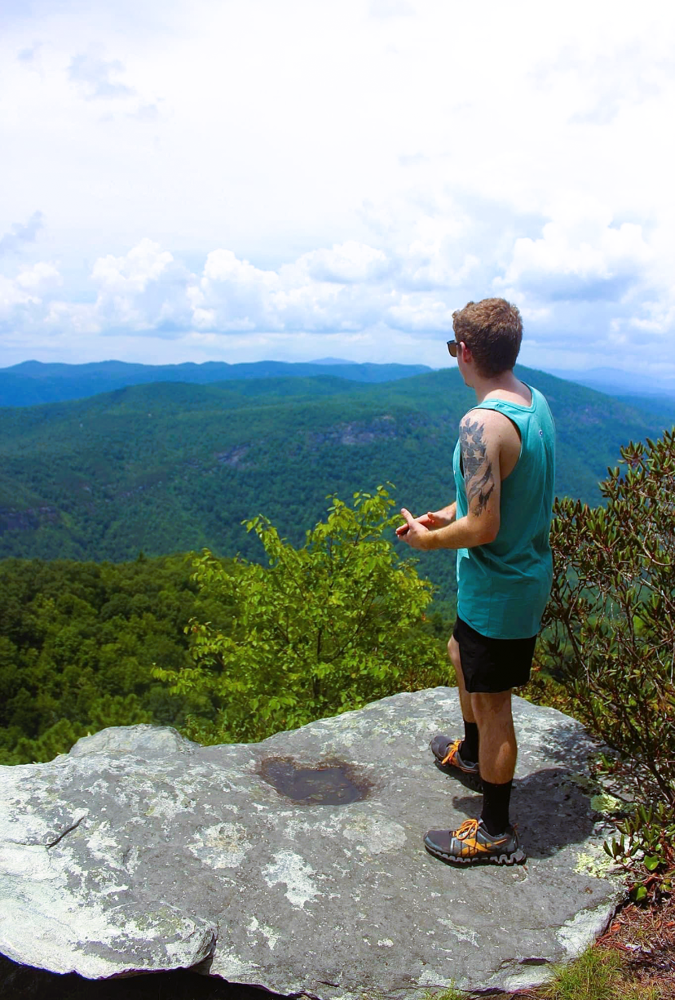
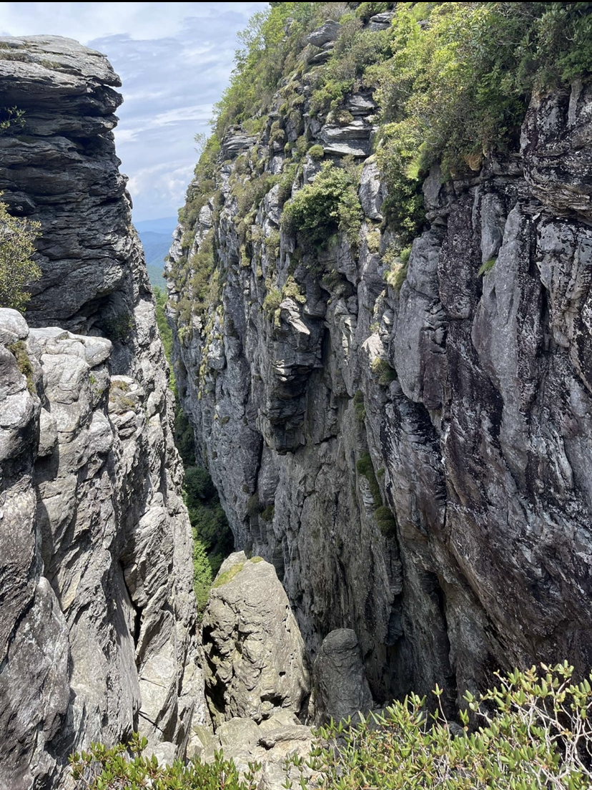
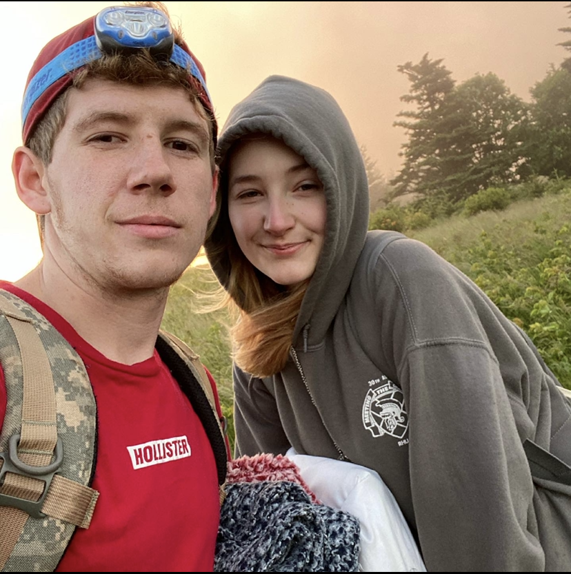
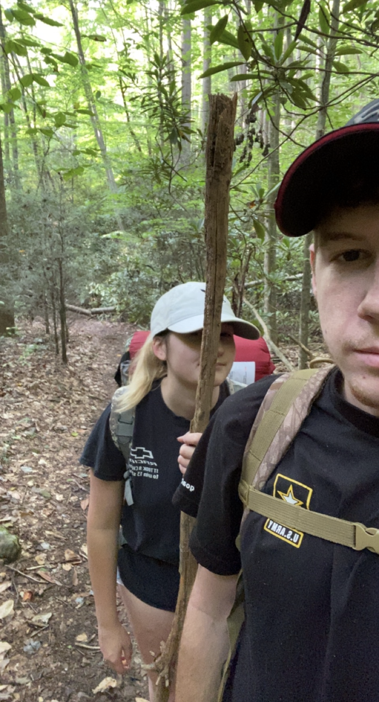

Here are some hobbies I enjoy doing in my very limited free time!
I love anything outdoors! This includes day hiking, trail camping, fishing, and the list goes on.
Here are some pictures of my adventures!
Here is me on top of Table Rock in North Carolina

Here is the amazing view at Devils Cellar in North Carolina

Here is me and my wife trail camping on top of Carvers Gap in Tennessee

Here is me and my wife trail camping on a trail near the Watauga Dam in Tennessee
